Prompt Life · v0.27.15
Visual Aid Audit
Rendered mobile-width screenshots and review notes for all 39 Journey visual aids. Screenshots were captured at 390px wide from the review route.
Top 10 Future Repair Candidates
- Borrowed Flames (collective-intelligence-lantern, P1): Important provenance/labor idea is still abstract; future visual should make data, labor, and extraction relationships more concrete.
- Benefit Tiers (benefits-tool-garden, P1): Benefit tiers need sharper connection to realistic use plus human review.
- Cost Ledger (costs-invisible-factory, P1): Cost categories are important and can become crowded; future pass should make costs easier to scan.
- Accountability Flow (human-centered-ai-garden, P1): Accountability flow should be made more operational and less metaphor-dependent.
- Better-AI Control Panel (responsible-ai-forked-path, P1): Governance/control-panel idea should be clearer for institutional decision makers.
- Full Chain Map (synthesis-map-compass-lantern, P1): Full-chain synthesis is the densest visual; needs simplification before badge-facing review.
- Overfitting vs Generalization (overfitting-generalization, P2): Set-aside validation is explained, but future polish should make the held-back examples visually unmistakable at 320px.
- Fine-Tuning Path (before-morning-finetuning-path, P2): Generated image is usable, but a future coded callout should contrast durable adaptation with prompt, RAG, and sampling more explicitly.
- Text to Tokens (tokenization, P2): Recent token-chip repair is mostly readable; keep watching the final token/punctuation example at 320px.
- Feature Vector (vectors, P2): Abstract feature dimensions are correct but could use a less dense future visual for nontechnical learners.
Card-by-Card Inventory
Prompt to Prediction
before-morning-llm-cloud · generated PNG or image asset · P3 · Keep
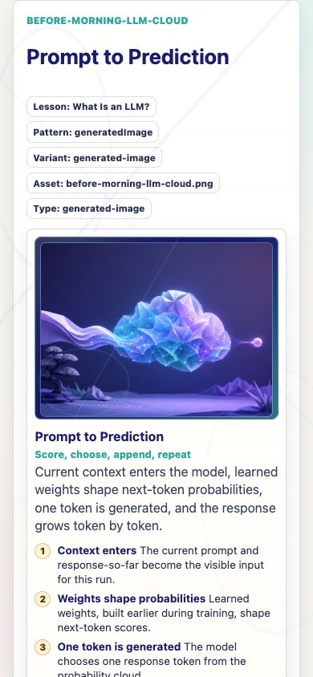
- Objective
- Show current context flowing through learned weights into one generated token.
- Recommendation
- Generated asset works well as the opening mechanism visual; keep text in HTML captions.
- Sample labels
- Image-based or no text labels captured
AI Family Tree
ai-family-tree · coded SVG · P3 · Keep
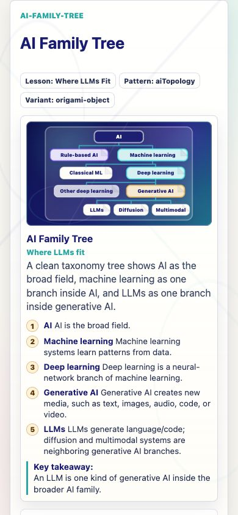
- Objective
- Give learners a simple topology of AI categories before the history card introduces rules-first and learned-pattern traditions.
- Recommendation
- Readable topology visual; tap/reveal behavior supports the category map.
- Sample labels
- AI | Rule-based AI | Machine learning | Classical ML | Deep learning | Other deep learning | Generative AI | LLMs | Diffusion | Multimodal
Rules and Learned Patterns
traditions · coded SVG · P3 · Keep
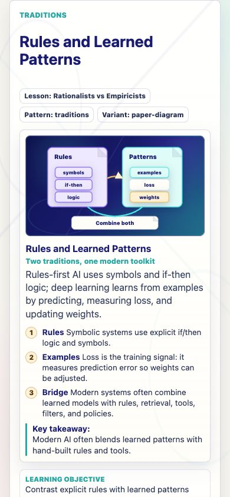
- Objective
- Contrast explicit rules with learned patterns without turning the diagram into a poster.
- Recommendation
- Rules versus learned-patterns visual is clear; Loss has glossary support.
- Sample labels
- Rules | symbols | if-then | logic | Patterns | examples | loss | weights | Combine both
Training Loop
training-loop · coded SVG · P3 · Keep
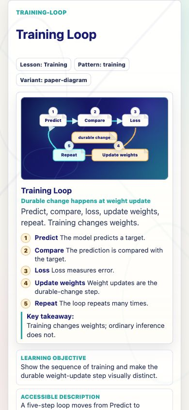
- Objective
- Show the sequence of training and make the durable weight-update step visually distinct.
- Recommendation
- Training loop clearly separates examples, loss, and weight update.
- Sample labels
- Predict | Compare | Loss | Update weights | Repeat | 1 | 2 | 3 | 4 | 5 | durable change
Broad Pretraining
before-morning-pretraining-landscape · generated PNG or image asset · P3 · Keep
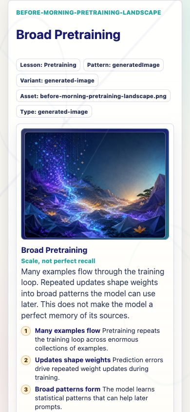
- Objective
- Show broad data exposure shaping durable model weights before ordinary use.
- Recommendation
- Generated landscape communicates scale without replacing accessible HTML copy.
- Sample labels
- Image-based or no text labels captured
Overfitting vs Generalization
overfitting-generalization · coded SVG · P2 · Revise later
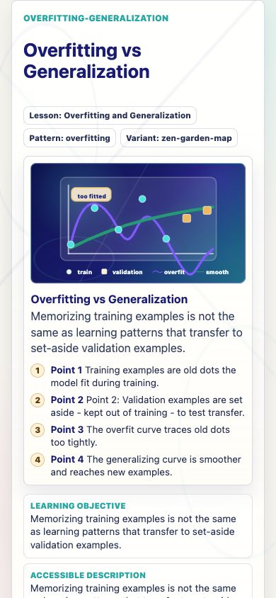
- Objective
- Memorizing training examples is not the same as learning patterns that transfer to set-aside validation examples.
- Recommendation
- Set-aside validation is explained, but future polish should make the held-back examples visually unmistakable at 320px.
- Sample labels
- too fitted | train | validation | overfit | smooth
Fine-Tuning Path
before-morning-finetuning-path · generated PNG or image asset · P2 · Revise later
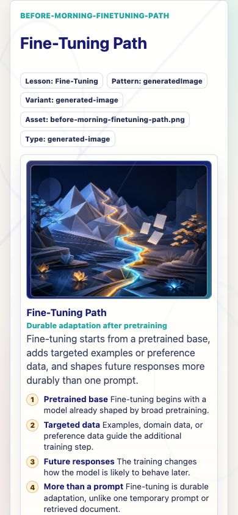
- Objective
- Show targeted training carving a more specific path through a pretrained model landscape.
- Recommendation
- Generated image is usable, but a future coded callout should contrast durable adaptation with prompt, RAG, and sampling more explicitly.
- Sample labels
- Image-based or no text labels captured
Alignment Landscape
before-morning-alignment-garden · generated PNG or image asset · P3 · Keep
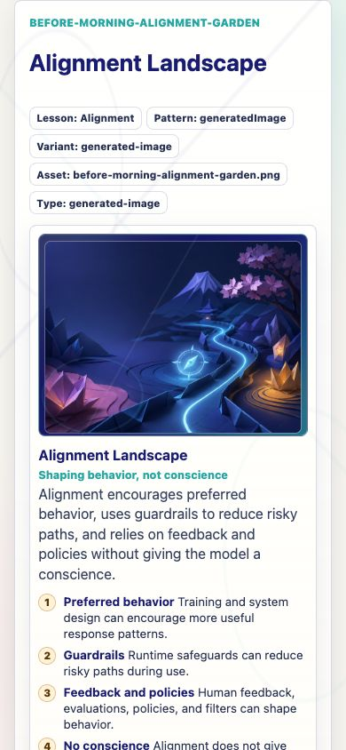
- Objective
- Show alignment as guided behavior shaping, not moral understanding.
- Recommendation
- Generated visual supports the alignment metaphor; captions keep limits explicit.
- Sample labels
- Image-based or no text labels captured
Forward Pass
inference-pass · coded SVG · P3 · Fixed this pass
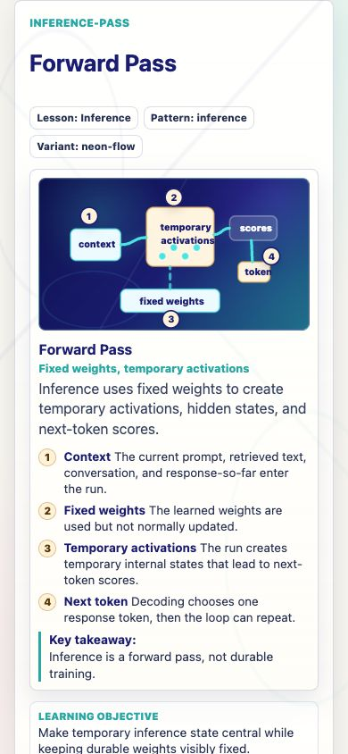
- Objective
- Make temporary inference state central while keeping durable weights visibly fixed.
- Recommendation
- Tiny output label changed from the example word to token so it reads as generated-token output, not a mysterious component.
- Sample labels
- context | temporary | activations | scores | token | fixed weights | 1 | 2 | 3 | 4
Prompt vs Response
prompt-response · coded HTML/CSS · P3 · Keep
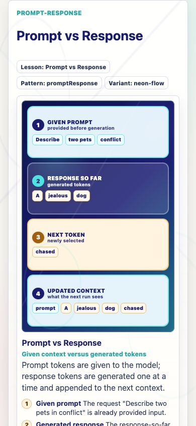
- Objective
- Separate the complete user prompt from response-so-far, next token, and the current context for the next run.
- Recommendation
- Recent stacked-panel repair is crisp and separates given prompt, response-so-far, next token, and updated context.
- Sample labels
- Describe | two pets | conflict | A | jealous | dog | chased | prompt | A | jealous | dog | chased
Text to Tokens
tokenization · coded HTML/CSS · P2 · Watch
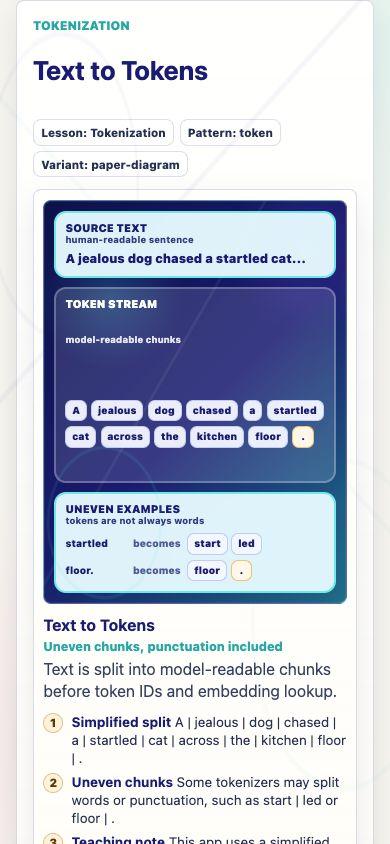
- Objective
- Show that tokens can be words, word pieces, punctuation, or other chunks.
- Recommendation
- Recent token-chip repair is mostly readable; keep watching the final token/punctuation example at 320px.
- Sample labels
- A | jealous | dog | chased | a | startled | cat | across | the | kitchen | floor | . | startled | start | led | floor. | floor | .
Token IDs
token-ids · coded SVG · P3 · Keep
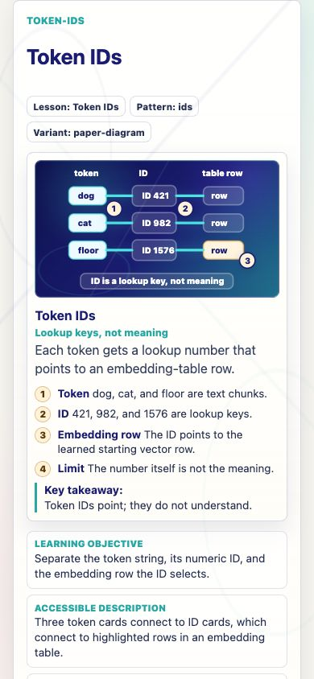
- Objective
- Separate the token string, its numeric ID, and the embedding row the ID selects.
- Recommendation
- Lookup-key flow is clear and avoids implying the ID contains meaning.
- Sample labels
- token | ID | table row | dog | ID 421 | row | cat | ID 982 | row | floor | ID 1576 | row | ID is a lookup key, not meaning | 1 | 2 | 3
Embedding Lookup
embeddings · coded SVG · P3 · Keep
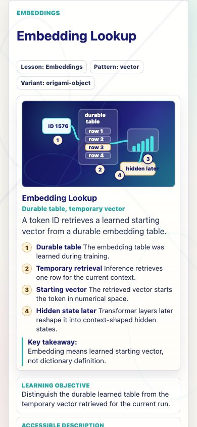
- Objective
- Distinguish the durable learned table from the temporary vector retrieved for the current run.
- Recommendation
- Durable table versus temporary vector is clear.
- Sample labels
- ID 1576 | durable | table | row 1 | row 2 | row 3 | row 4 | hidden later | 1 | 2 | 3 | 4
Feature Vector
vectors · coded SVG · P2 · Revise later
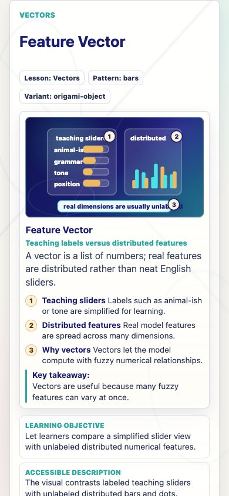
- Objective
- Let learners compare a simplified slider view with unlabeled distributed numerical features.
- Recommendation
- Abstract feature dimensions are correct but could use a less dense future visual for nontechnical learners.
- Sample labels
- teaching sliders | animal-ish | grammar | tone | position | distributed | real dimensions are usually unlabeled | 1 | 2 | 3
Tensor Block
tensors · coded SVG · P2 · Revise later
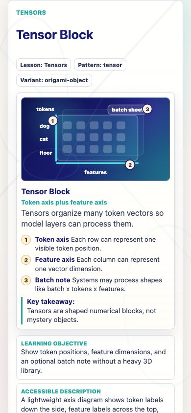
- Objective
- Show token positions, feature dimensions, and an optional batch note without a heavy 3D library.
- Recommendation
- Tensor blocks are accurate but visually abstract; future pass can clarify dimensions and temporary/durable status.
- Sample labels
- dog | cat | floor | tokens | features | batch sheet | 1 | 2 | 3
Attention Weave
attention · coded SVG · P3 · Keep
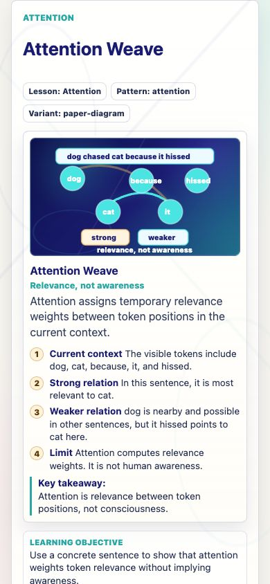
- Objective
- Use a concrete sentence to show that attention weights token relevance without implying awareness.
- Recommendation
- Attention arcs support weighted relevance without implying awareness.
- Sample labels
- dog chased cat because it hissed | dog | cat | because | it | hissed | strong | weaker | relevance, not awareness
MLP Feature Workshop
mlp · coded SVG · P3 · Keep
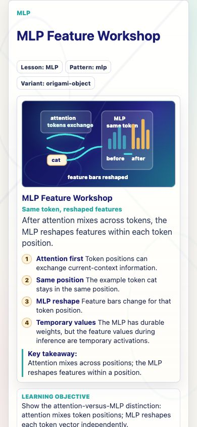
- Objective
- Show the attention-versus-MLP distinction: attention mixes token positions; MLP reshapes each token vector independently.
- Recommendation
- Per-token feature reshaping is communicated with concise labels.
- Sample labels
- attention | tokens exchange | cat | MLP | same token | before | after | feature bars reshaped
Transformer Stack
layers · coded SVG · P3 · Keep
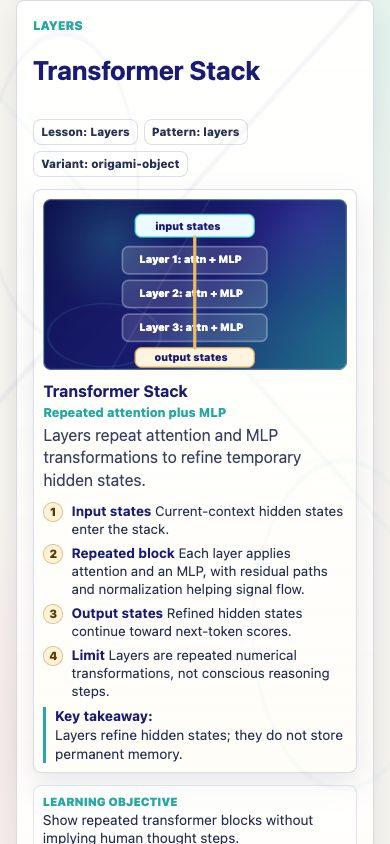
- Objective
- Show repeated transformer blocks without implying human thought steps.
- Recommendation
- Stacked transformations remain readable and emphasize repetition.
- Sample labels
- input states | Layer 1: attn + MLP | Layer 2: attn + MLP | Layer 3: attn + MLP | output states
Raw Scoreboard
logits · coded SVG · P3 · Keep
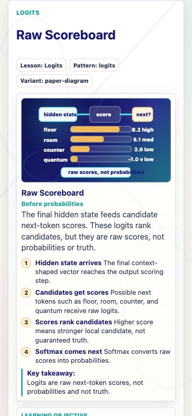
- Objective
- Show final hidden state becoming raw vocabulary scores before softmax.
- Recommendation
- Raw score bars clearly precede probabilities and truth checks.
- Sample labels
- hidden state | score | next? | floor | 8.2 high | room | 5.1 med | counter | 2.0 low | quantum | -1.0 v low | raw scores, not probabilities
Score to Probability
softmax · coded SVG · P3 · Keep
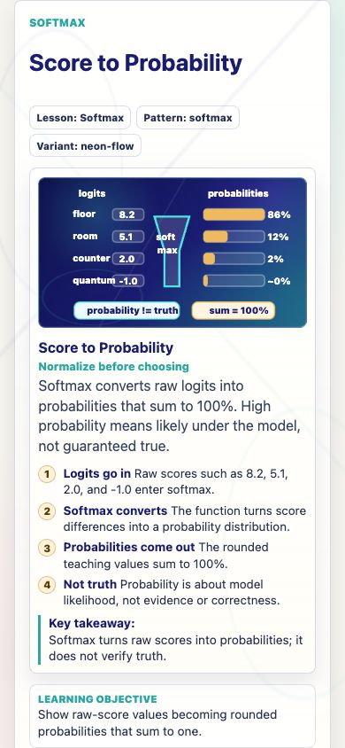
- Objective
- Show raw-score values becoming rounded probabilities that sum to one.
- Recommendation
- Raw scores to probabilities is readable and mathematically bounded.
- Sample labels
- logits | probabilities | soft | max | floor | 8.2 | 86% | room | 5.1 | 12% | counter | 2.0 | 2% | quantum | -1.0 | ~0% | sum = 100% | probability != truth
Weighted Token Choice
sampling · coded SVG · P3 · Keep
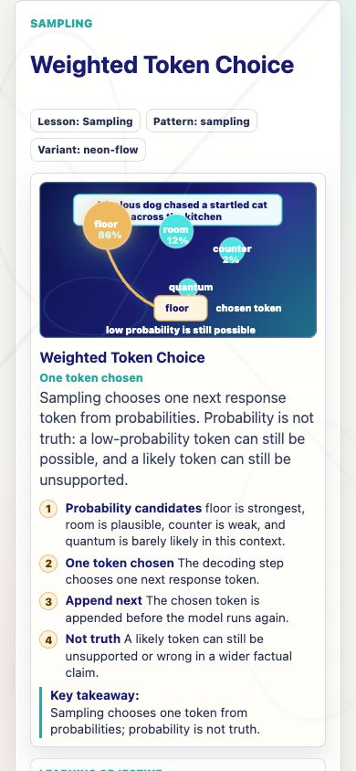
- Objective
- Show probability weights and the single selected next token before autoregression repeats.
- Recommendation
- Weighted choice visual supports probability-not-truth distinction.
- Sample labels
- A jealous dog chased a startled cat | across the kitchen | floor | 86% | room | 12% | counter | 2% | quantum | ~0% | floor | chosen token | low probability is still possible
Append and Repeat
autoregression · coded SVG · P3 · Keep
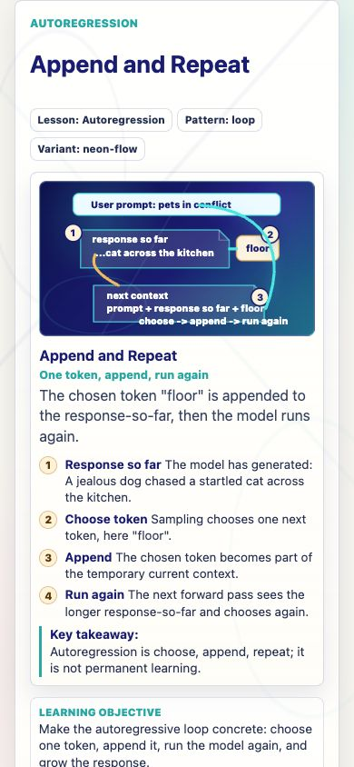
- Objective
- Make the autoregressive loop concrete: choose one token, append it, run the model again, and grow the response.
- Recommendation
- Loop visual clearly shows choose, append, repeat.
- Sample labels
- User prompt: pets in conflict | response so far | ...cat across the kitchen | 1 | floor | 2 | next context | prompt + response so far + floor | 3 | choose -> append -> run again
Temporary Context Window
context-window · coded SVG · P3 · Keep
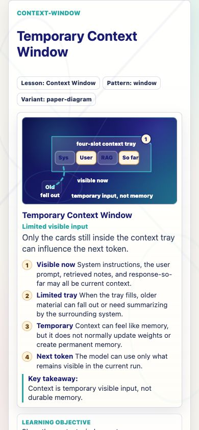
- Objective
- Show the context window as temporary capacity: system, user, retrieved, and response-so-far cards can fit, while old context can fall out.
- Recommendation
- Temporary context capacity and fall-out behavior are easy to read.
- Sample labels
- four-slot context tray | 1 | Sys | User | RAG | So far | Old | fell out | visible now | temporary input, not memory
Open-Book Retrieval
rag-retrieval · coded SVG · P3 · Keep
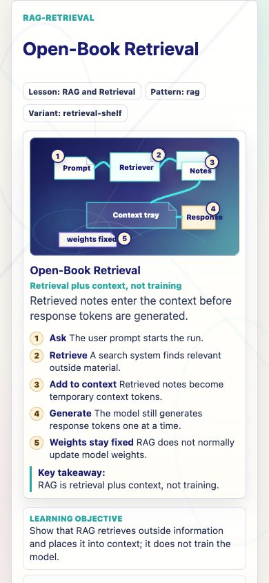
- Objective
- Show that RAG retrieves outside information and places it into context; it does not train the model.
- Recommendation
- Open-book retrieval flow clearly places retrieved text into context.
- Sample labels
- Prompt | 1 | Retriever | 2 | Notes | 3 | Context tray | Response | 4 | weights fixed | 5
Claim Support Map
grounding-evidence · coded SVG · P3 · Keep
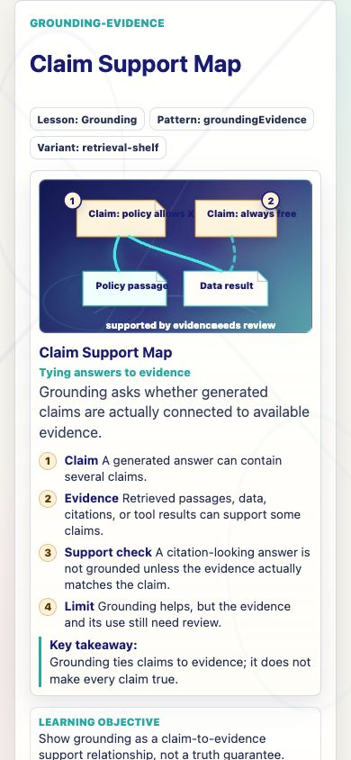
- Objective
- Show grounding as a claim-to-evidence support relationship, not a truth guarantee.
- Recommendation
- Claim-to-evidence structure reinforces grounding without a truth guarantee.
- Sample labels
- Claim: policy allows X | 1 | Claim: always free | 2 | Policy passage | Data result | supported by evidence | needs review
Unsupported Bridge
hallucination-bridge · coded SVG · P3 · Keep
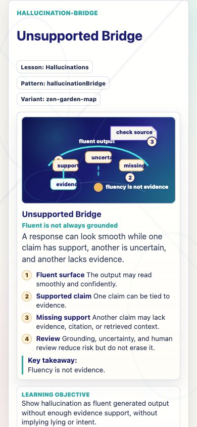
- Objective
- Show hallucination as fluent generated output without enough evidence support, without implying lying or intent.
- Recommendation
- Unsupported bridge metaphor communicates fluent output outrunning support.
- Sample labels
- fluent output | 1 | supported | uncertain | missing | evidence | 2 | check source | 3 | fluency is not evidence
Learning Modes Matrix
ai-learns · coded SVG · P2 · Revise later
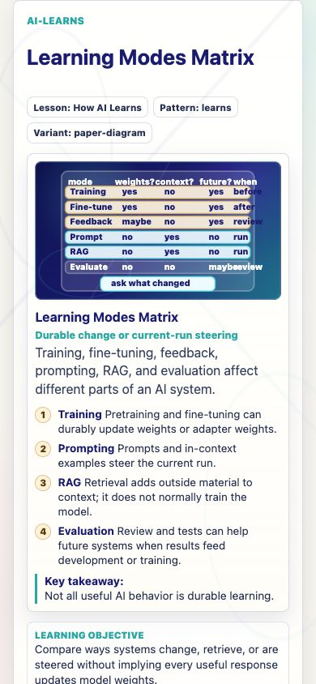
- Objective
- Compare ways systems change, retrieve, or are steered without implying every useful response updates model weights.
- Recommendation
- Matrix is accurate but dense; future pass should make durable versus temporary categories more scannable.
- Sample labels
- mode | weights? | context? | future? | when | Training | yes | no | yes | before | Fine-tune | yes | no | yes | after | Feedback | maybe | no | yes | review | Prompt | no | yes | no | run | RAG | no | yes | no | run
Append Or Denoise
diffusion · coded SVG · P3 · Keep
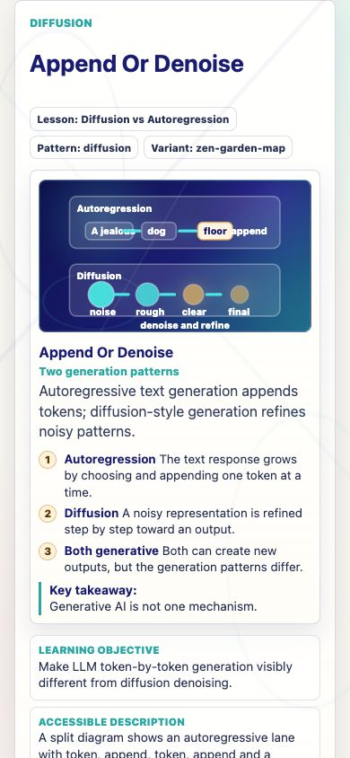
- Objective
- Make LLM token-by-token generation visibly different from diffusion denoising.
- Recommendation
- Append-versus-denoise contrast is direct and avoids ChatGPT-as-all-AI.
- Sample labels
- Autoregression | A jealous | dog | floor | append | Diffusion | noise | rough | clear | final | denoise and refine
Media Lane Map
multimodal · coded SVG · P3 · Keep
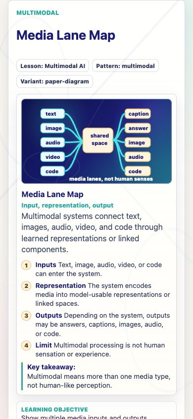
- Objective
- Show multiple media inputs and outputs without implying human-like perception.
- Recommendation
- Media lanes are readable and avoid human-senses overclaim.
- Sample labels
- text | image | audio | video | code | shared | space | caption | answer | image | audio | code | media lanes, not human senses
Storm Front
perfect-storm · coded SVG · P3 · Keep
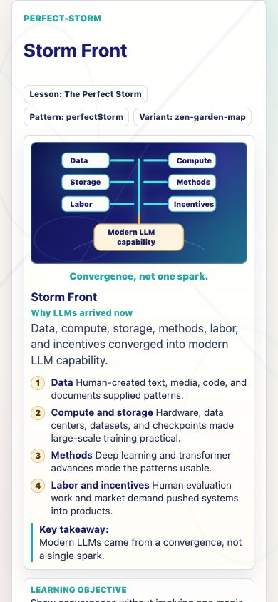
- Objective
- Show convergence without implying one magic breakthrough.
- Recommendation
- Repaired convergence layout is readable and keeps “convergence, not spark” out of the diagram body.
- Sample labels
- Data | Compute | Storage | Methods | Labor | Incentives | Modern LLM | capability
Borrowed Flames
collective-intelligence-lantern · coded SVG · P1 · Revise later
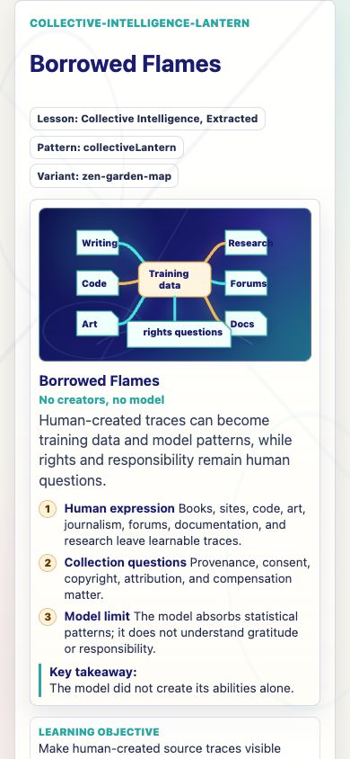
- Objective
- Make human-created source traces visible without treating the model as humanity’s mind.
- Recommendation
- Important provenance/labor idea is still abstract; future visual should make data, labor, and extraction relationships more concrete.
- Sample labels
- Writing | Code | Art | Research | Forums | Docs | Training | data | rights questions
Benefit Tiers
benefits-tool-garden · coded SVG · P1 · Revise later
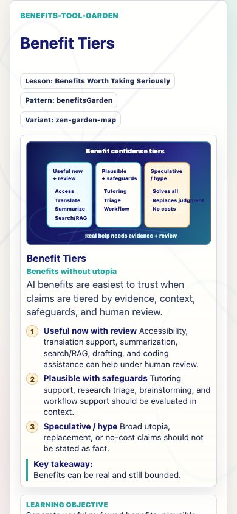
- Objective
- Separate useful reviewed benefits, plausible guarded benefits, and speculative hype.
- Recommendation
- Benefit tiers need sharper connection to realistic use plus human review.
- Sample labels
- Benefit confidence tiers | Useful now | + review | Access | Translate | Summarize | Search/RAG | Plausible | + safeguards | Tutoring | Triage | Workflow | Speculative | / hype | Solves all | Replaces judgment | No costs | Real help needs evidence + review
Cost Ledger
costs-invisible-factory · coded SVG · P1 · Revise later
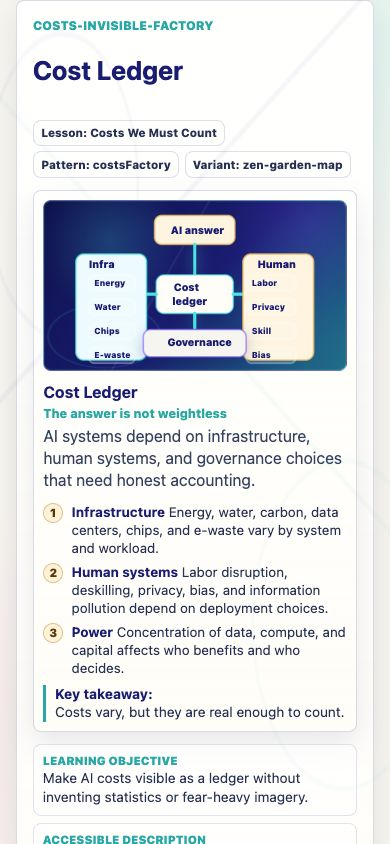
- Objective
- Make AI costs visible as a ledger without inventing statistics or fear-heavy imagery.
- Recommendation
- Cost categories are important and can become crowded; future pass should make costs easier to scan.
- Sample labels
- AI answer | Cost | ledger | Infra | Energy | Water | Chips | E-waste | Human | Labor | Privacy | Skill | Bias | Governance
Accountability Flow
human-centered-ai-garden · coded SVG · P1 · Revise later
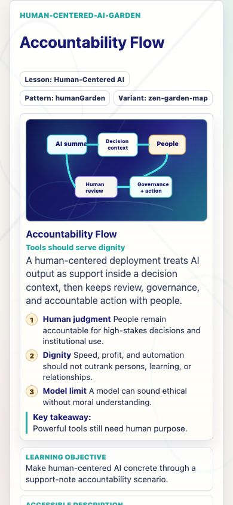
- Objective
- Make human-centered AI concrete through a support-note accountability scenario.
- Recommendation
- Accountability flow should be made more operational and less metaphor-dependent.
- Sample labels
- AI summary | Decision | context | People | Human | review | Governance | + action
Better-AI Control Panel
responsible-ai-forked-path · coded SVG · P1 · Revise later
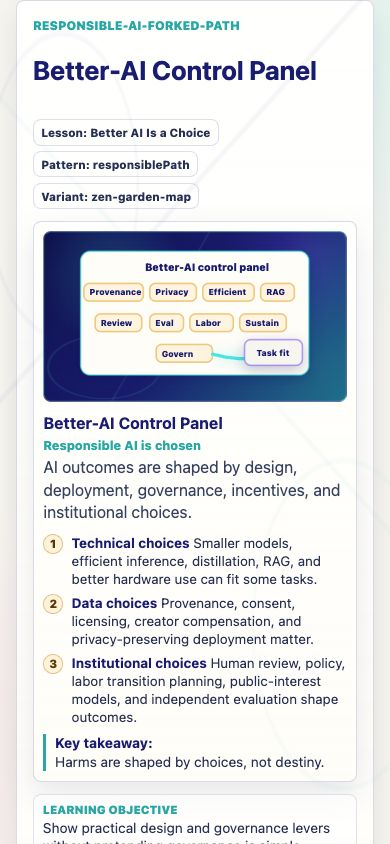
- Objective
- Show practical design and governance levers without pretending governance is simple.
- Recommendation
- Governance/control-panel idea should be clearer for institutional decision makers.
- Sample labels
- Better-AI control panel | Provenance | Privacy | Efficient | RAG | Review | Eval | Labor | Sustain | Govern | Task fit
Context Tray
prompting-context-tray · coded SVG · P3 · Keep
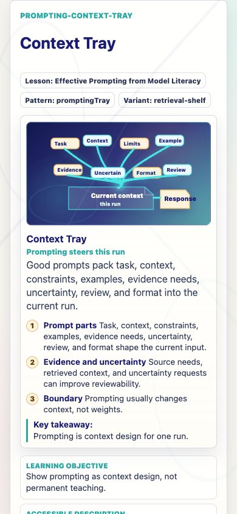
- Objective
- Show prompting as context design, not permanent teaching.
- Recommendation
- Context tray supports prompting-as-context-shaping.
- Sample labels
- Task | Context | Limits | Example | Evidence | Uncertain | Format | Review | Current context | this run | Response
Full Chain Map
synthesis-map-compass-lantern · coded SVG · P1 · Revise later
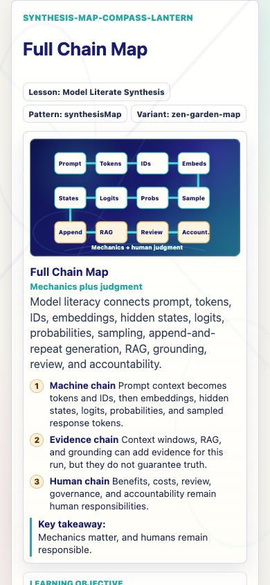
- Objective
- Close the Journey by connecting the machine chain with human consequences.
- Recommendation
- Full-chain synthesis is the densest visual; needs simplification before badge-facing review.
- Sample labels
- Prompt | Tokens | IDs | Embeds | States | Logits | Probs | Sample | Append | RAG | Review | Account. | Mechanics + human judgment
Risk Ledger
risk · coded SVG · P2 · Revise later
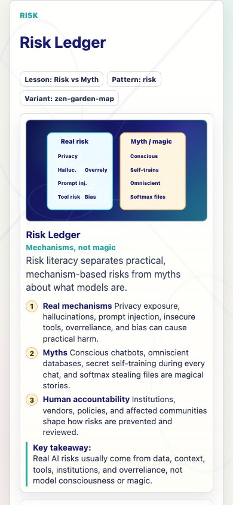
- Objective
- Separate concrete institutional risks from magical stories without doom or hype.
- Recommendation
- Risk ledger is useful but can be refined so real risks and myths remain balanced and readable.
- Sample labels
- Real risk | Myth / magic | Privacy | Halluc. | Prompt inj. | Tool risk | Overrely | Bias | Conscious | Self-trains | Omniscient | Softmax files